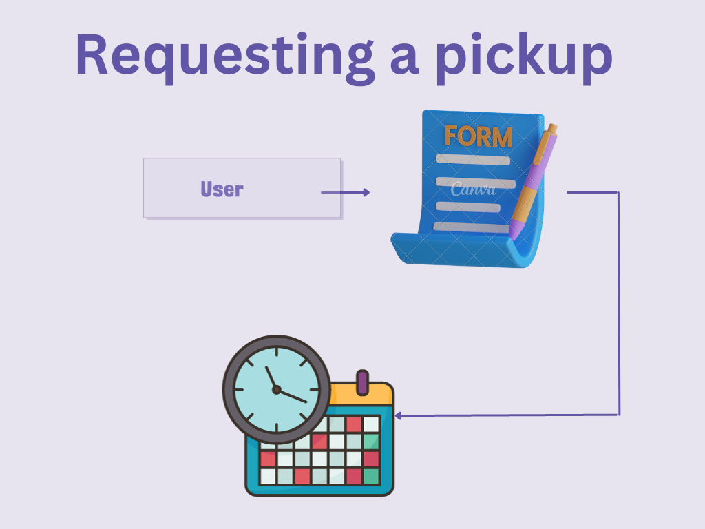
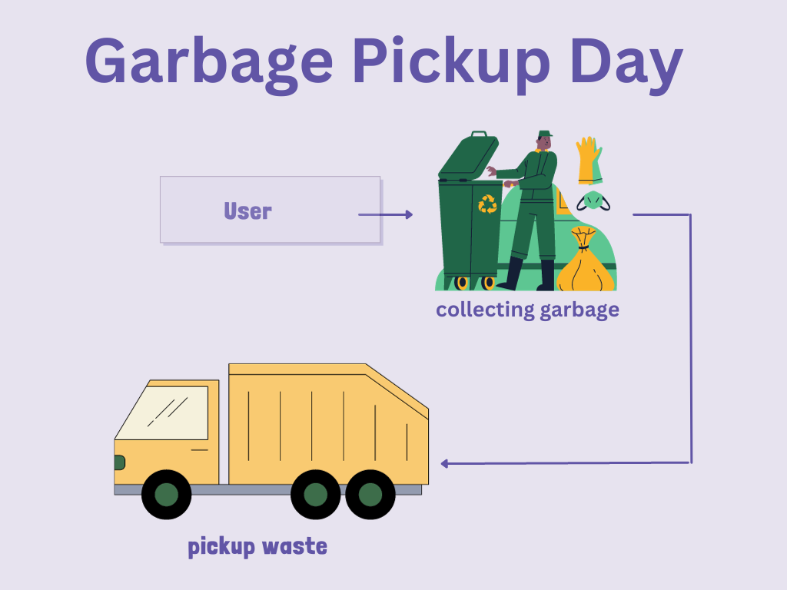
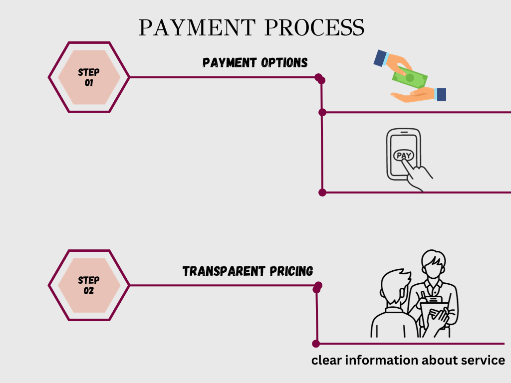
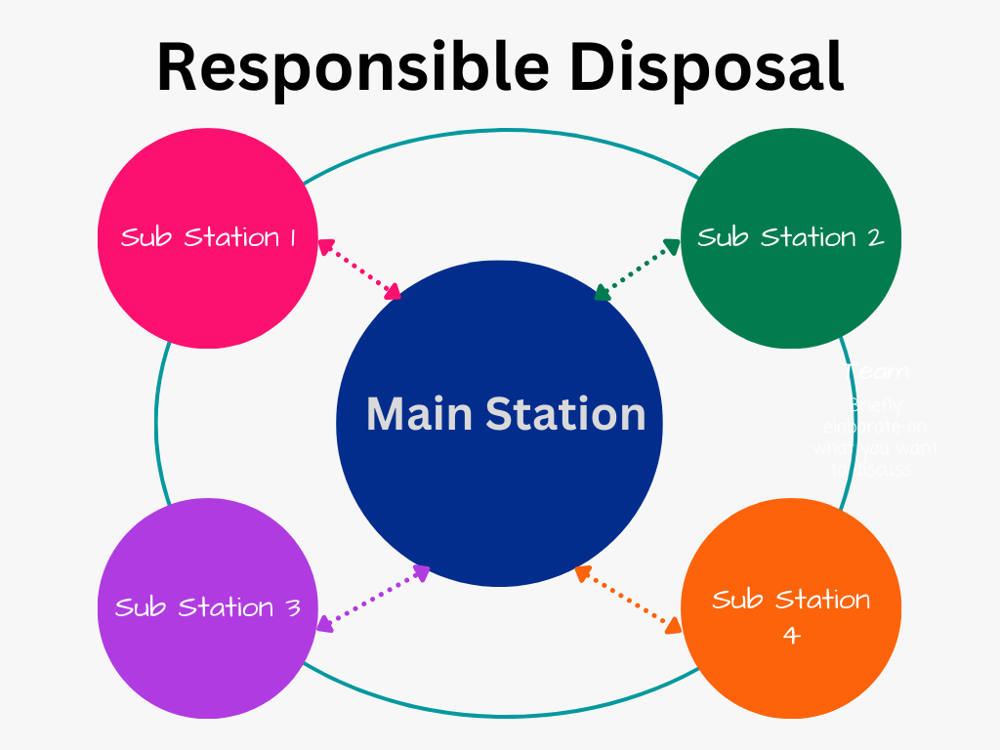
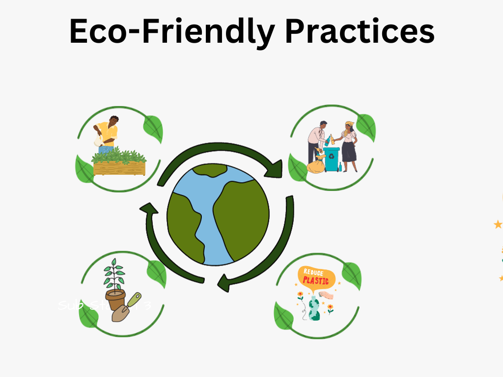

|  |
Requesting a Garbage Pickup
Fill out the Pickup Form: Start the process by filling out a pickup form on our website. Provide your
essential details such as name, address, contact information, and specify the type of garbage you
need to dispose of. |
|
Garbage Pickup Day
Professional Collection Team: Our trained personnel or designated garbage collectors will arrive at
your location on the scheduled day. |
 |
|  |
Payment Process
Payment Options: We offer various payment methods, including cash payments to collectors, online
payments via our secure website, and other accepted payment options. |
|
Responsible Disposal
Transport to Sub Station: After payment, we take the collected garbage to our designated disposal
facility, often referred to as a sun station or landfill. |
 |
|  |
Eco-Friendly Practices
Recycling Initiatives: Learn about our commitment to recycling and eco-friendly waste management
practices. |